แคตตาล็อกต้นไม้
ไม้ฟอกอากาศ & ไม้ประดับในบ้าน |
|||
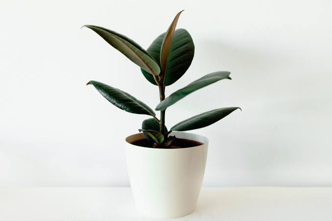 ยางอินเดียดำ จุดเด่น: ใบหนา มันเงา สีเขียวเข้มจนเกือบดำ ช่วยดักจับฝุ่นละอองและฟอกอากาศได้ดีมาก ☀️ แดดรำไร | 💧 รดน้ำ 2-3 วัน/ครั้ง |
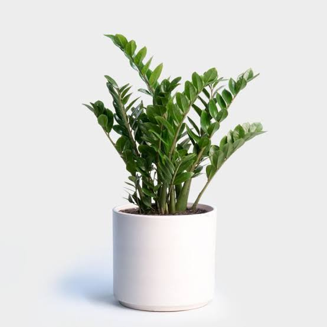 กวักมรกต จุดเด่น: ใบเรียงตัวสวย มันเงา อดทนสูง ไม่ค่อยมีแมลงรบกวน ไม้มงคลเชื่อว่าเรียกทรัพย์ ☀️ ร่มรื่น | 💧 รดน้ำสัปดาห์ละ 1 ครั้ง |
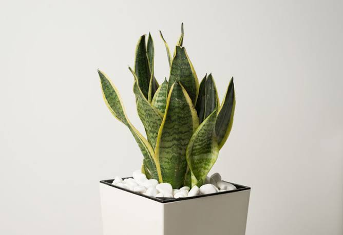 ลิ้นมังกรแคระ จุดเด่น: คายออกซิเจนและดูดก๊าซคาร์บอนไดออกไซด์ในตอนกลางคืน เหมาะกับการวางในห้องนอน ☀️ แดดรำไร | 💧 รดน้ำ 5-7 วัน/ครั้ง |
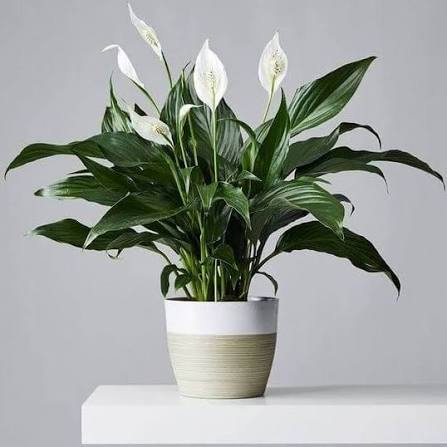 เดหลี จุดเด่น: ใบสีเขียวสด มีดอกสีขาวสวยงาม ช่วยดูดซับสารพิษจำพวกฟอร์มาลดีไฮด์ในอากาศ ☀️ แดดรำไร | 💧 รดน้ำ 1-2 วัน/ครั้ง |
ไม้ประดับโต๊ะทำงาน & ไม้มงคลขนาดเล็ก |
|||
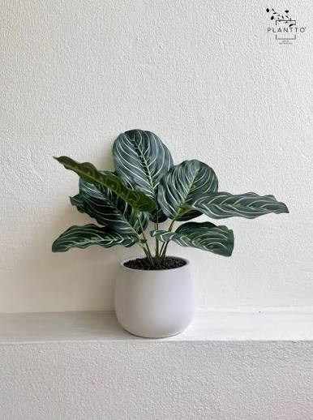 คล้าขุนแผน จุดเด่น: ลายใบสวยงามคล้ายภาพวาด ใบลายสีชมพูสลับเขียว เพิ่มความสดชื่นบนโต๊ะทำงาน ☀️ แดดรำไร | 💧 รดน้ำทุกวัน |
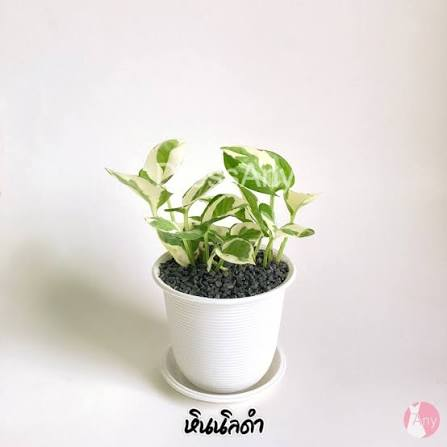 พลูด่างมินิ จุดเด่น: ไม้เลื้อยใบสีเขียวสลับด่างเหลือง อดทน สามารถปลูกในกระถางหรือแจกันใส่น้ำได้ ☀️ ร่มรื่น | 💧 รดน้ำ 2-3 วัน/ครั้ง |
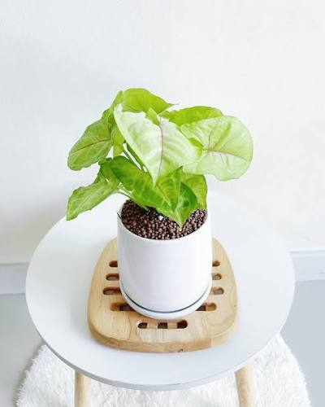 ออมเงิน ออมทอง จุดเด่น: ใบเป็นรูปหัวใจ สีชมพูหรือเขียวอ่อนพาสเทล ไม้มงคลเชื่อว่าช่วยเก็บเงินทอง ☀️ แดดรำไร | 💧 รดน้ำ 2 วัน/ครั้ง |
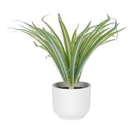 เศรษฐีเรือนใน จุดเด่น: ใบสวยมินิมอล ช่วยฟอกอากาศ เสริมโชคลาภค้าขาย ☀️ แดดรำไร | 💧 รดน้ำ 2-3วัน/ครั้ง |
แคกตัส & กุหลาบหิน |
|||
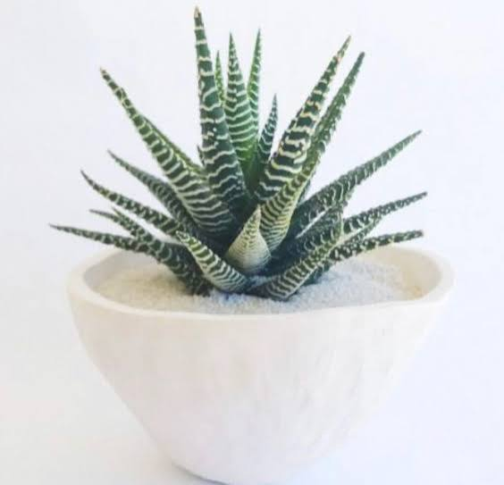 ม้าลาย จุดเด่น: ลายเส้นสีขาวสวยงามตัดกับใบสีเขียว ทรงแหลมสวย ไม่ทิ่มมือ ☀️ แดดรำไร | 💧 รดน้ำสัปดาห์ละ 1 ครั้ง |
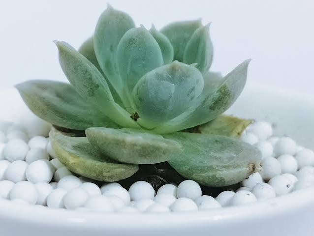 กุหลาบหิน จุดเด่น: ฟอร์มใบเรียงซ้อนกันเป็นกลีบสวยงามเหมือนดอกกุหลาบ ☀️ ร่มรื่น | 💧 รดน้ำสัปดาห์ละ 1 ครั้ง |
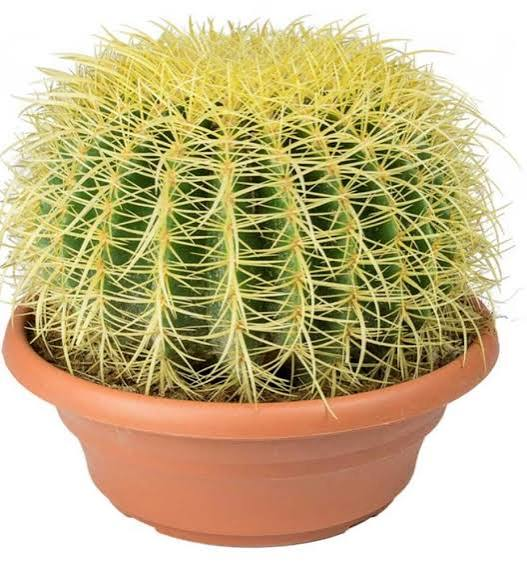 ถังทอง จุดเด่น: ทรงกลมลวดลายสวยงาม หนามสีเหลืองทองแน่น สื่อถึงความมั่งคั่ง ทนแล้งได้ดีมาก ☀️ แดดรำไร | 💧 รดน้ำ 7-10 วัน/ครั้ง |
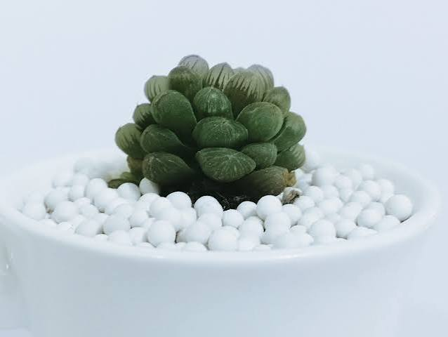 หยดน้ำ จุดเด่น: ปลายใบใสมองเห็นข้างในเหมือนหยดน้ำ น่ารัก สไตล์มินิมอล ☀️ ชื้นรำไร | 💧 รดน้ำ 4-5 วัน/ครั้ง |